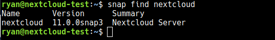
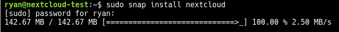
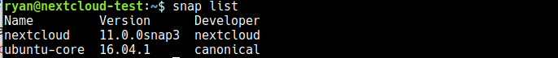
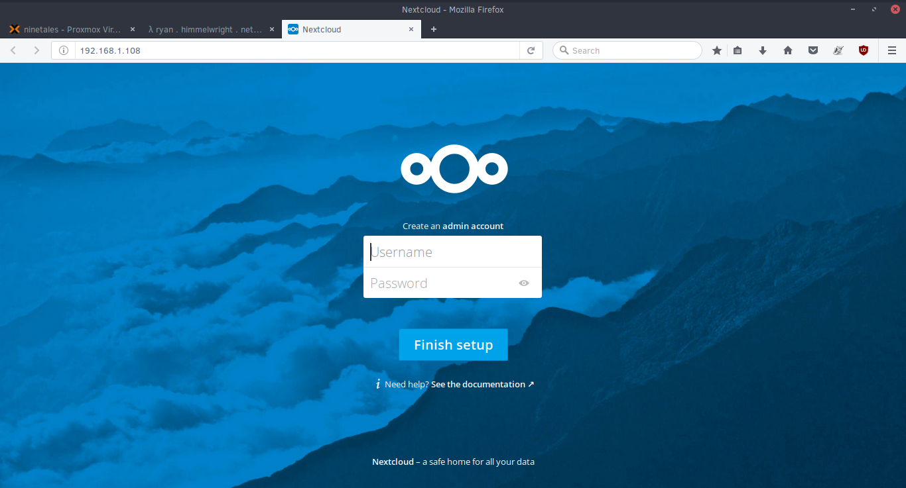

Installing Nextcloud 11 in a Snap
As an Owncloud user for several years, it was a big deal when the project split to Nextcloud. Based on philosophies and just the general direction of the two projects, I decided I wanted to switch over to Nextcloud as soon as possible... but I kinda dragged me feet on that. However, once I realized Nextcloud could now be installed via a snap package... I had to try it out.
Setup a host
The first step is to setup a host instance. For my real server, I am using a Ubuntu 16.04 Digital Ocean droplet. However, for this tutorial I have spun up a fresh 16.04 Ubuntu VM on my home server. This way I can ensure I get every step, and can take a few screenshotes ;) .Feel free to use what ever hosting setup you want. Since we are using snaps, I would reccomend using at Ubuntu 16.04 or newer. As stated, I will be basing this guide off my experience using Ubuntu 16.04 (which is the current LTS).
After your host is setup, it is good practice to update the system before proceding.
sudo apt-get update
sudo apt-get upgrade
Installing the Snap & Setting up Nextcloud
Ubuntu 16.04 and later should have snapd installed and running by default. If you are using an older version, or another distro, you might have to first setup and start snapd.With snapd running, we can search for the nextcloud snap with the command
snap find nextcloud

After you confirm the snapname (nextcloud), you can easily download and install it with the sudo command:
sudo snap install nextcloud
This might take a minute or so to down load if you have a slow connection. Otherwise, it should install easily.

If you want to verify that the snap installed, you can use the snap list command to check if nextcloud is listed.

After the nextcloud snap is installed, it should automaticall start. To check this, go to the ip of your server in a web browser to make sure the nextcloud service is running. You should be prompted with a screen to create an admin account.
